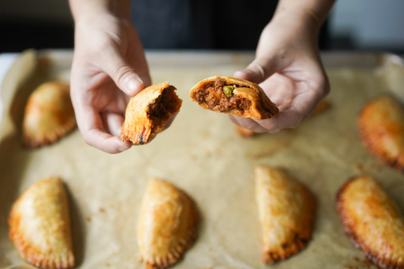

Ilocos Empanada

Empanadas, although Spanish or Mexican in origin, has been embraced by
Filipinos as their own. Filipino empanadas come in different sizes,
colors, and fillings. This recipe is as basic as it gets. You'd find this
kind of filling in most empanada vendors you see. Try this recipe today! (˵ •̀ ᴗ - ˵ ) ✧
Ingredients
Filling
- ⅓ c frozen peas
- 8 fl oz (1 c) filtered water
- ½ fl oz (1 tbsp) vegetable oil
- ½ c onions (½ small onion) chopped
- 1 tbsp garlic (5 cloves) minced
- ½ lb (226.8 g) ground beef
- 8 fl oz (1 c) tomato sauce (½ can)
- 21.5 g (5 tsp) brown sugar
- 2.6 g (¾ tsp ) salt
- .4 g (¼ tsp) black pepper
- ⅓ c carrots (1 medium carrot) minced
- ½ c gold potato (1 medium potato) chopped into fine pieces
Dough
- 250 g (2 c) all purpose flour
- 25 g (2 tbsp) white granulated sugar
- 2 g (½ tsp) salt
- 2 g (½ tsp) baking powder
- 114 g (8 tbsp) very cold butter cubed into ¼ inch cubes
- 1 egg
- 1 fl oz (2 tbsp) ice water
Assembly
- 1 egg beaten for egg wash
INSTRUCTIONS
FILLING
-
In a microwave safe bowl, add the filtered water and frozen peas and
microwave for 1-2 minutes or until the peas are soft and fully cooked.
It's best to follow the instructions on your package too.
-
In a large pan over medium heat, add the vegetable oil and onions. Saute
for one minute or until the onions are slightly translucent. Add the
garlic and saute for 30 seconds or until fragrant.
-
Add the ground beef and cook until the meat is brown, this is about 2-5
minutes. The meat will continue to cook in the sauce, but if you are
hesitant about food safety, the meat temperature should be around 160
°F.
-
Add tomato sauce, sugar, salt, and pepper into the pan and stir until
combined.
-
Add carrots and potatoes and cook for about 10-12 minutes or until
potatoes are soft enough to pierce with a fork without resistance, but
not disintegrating.
-
Add the peas and cook for an additional 1 minute to warm up the peas
-
Sauce should be thick and chunky. Move the pan from the heat and leave
it to cool until you are ready to assemble. You want this to be cool to
the touch so you don't end up melting your dough while you are filling
it with meat and trying to assemble your empanadas. If you are cooking
this ahead of time, transfer the filling into an airtight container once
it's cooled and move it into the fridge.

DOUGH
- Whisk all the dry ingredients into a mixing bowl and then add the cold butter. Use a pastry cutter to mix the butter into dry ingredients. Stop when the butter is about the size of a pea. Alternatively, do this in your food processor.

- In a small bowl, beat the egg and whisk in the water.
- Add the wet ingredients into the large mixing bowl with the dry ingredients and butter. Use a wooden spoon or spatula to combine. Use your hands to form the dough into a ball and wrap with cling wrap.

- Put the ball in the fridge for 15 minutes to chill.
ASSEMBLY
- Preheat the oven for 350 °F.
- Remove the dough from the fridge. Divide the ball of dough into 12 balls of dough (about 38 grams per ball). Cut two parchment papers in a 5 x 5 inch square.

- Place: one ball of dough in between the parchment papers.

- Roll: one small ball of dough into a 4 ½ inch diameter circle with a thickness of 3 mm. Do not roll past the parchment paper.

- Remove: the circle of dough from the parchment paper and place it at the palm of your hand.

- Fill: 1 ½ tablespoons of meat filling in the center in the form of a log.

- Seal: Take one end of the dough and fold it over so that the log is nestled in between. Use your hands to press the edges together.

- Crimp: Use a fork to crimp and finish the edges. Place the finished empanada on a parchment paper lined sheet pan.

- Repeat with all balls of dough.
- Beat an egg and brush each empanada on top. Place empanadas in the middle rack of your oven and bake for 25-30 minutes per batch.

- Remove them from the oven when they are golden brown. Place them on a cooling rack for about five minutes and serve.

ENJOY! (づ๑•ᴗ•๑)づ ♥